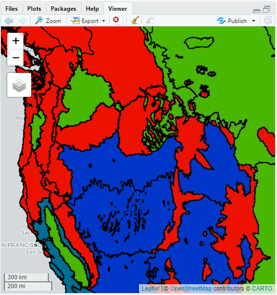

Feature & FeatureCollection
This section requires the next libraries:
Feature Overview
A Feature in Earth Engine is defined as a GeoJSON Feature. Specifically, a Feature is an object with a geometry property storing a Geometry object (or NULL) and a properties property storing a dictionary of other properties.
Creating Feature objects
To create a Feature, provide the constructor with a Geometry and (optionally) a dictionary of other properties. For example:
# Create an ee$Geometry.
polygon <- ee$Geometry$Polygon(
c(c(-35, -10), c(35, -10), c(35, 10), c(-35, 10), c(-35, -10))
)
# Create a Feature from the Geometry.
polyFeature <- ee$Feature(polygon, list(foo<- 42, bar<- "tart"))As with a Geometry, a Feature may be printed or added to the map for inspection and visualization:
print(ee$Feature$getInfo(polyFeature))
Map$addLayer(
polyFeature,
{},
"feature"
)A Feature need not have a Geometry and may simply wrap a dictionary of properties. For example:
# Create a dictionary of properties, some of which may be computed values.
dict <- list(foo<- ee$Number(8)$add(88), bar<- "nihao")
# Create a NULL geometry feature with the dictionary of properties.
nowhereFeature <- ee$Feature(NULL, dict)In this example, note that the dictionary supplied to the Feature contains a computed value. Creating features in this manner is useful for exporting long-running computations with a Dictionary result (e.g. image$reduceRegion()). See the FeatureCollections and Importing Table Data or Exporting guides for details.
Each Feature has one primary Geometry stored in the geometry property. Additional geometries may be stored in other properties. Geometry methods such as intersection and buffer also exist on Feature as a convenience for getting the primary Geometry, applying the operation, and setting the result as the new primary Geometry. The result will retain all the other properties of the Feature on which the method is called. There are also methods for getting and setting the non-geometry properties of the Feature. For example:
# Make a feature and set some properties.
feature <- ee$Feature(ee$Geometry$Point(c(-122.22599, 37.17605)))$
set("genus", "Sequoia")$set("species", "sempervirens")
# Get a property from the feature.
species <- feature$get("species")
print(ee$Feature$getInfo(species))
# Set a new property.
feature <- feature$set("presence", 1)
# Overwrite the old properties with a new dictionary.
newDict <- list(genus<- "Brachyramphus", species<- "marmoratus")
feature <- feature$set(newDict)
# Check the result.
print(ee$Feature$getInfo(feature))In the previous example, note that properties can be set with either a key: value pair, or with a list as a r literal. Also note that feature$set() overwrites existing properties.
FeatureCollection Overview
Groups of related features can be combined into a FeatureCollection, to enable additional operations on the entire set such as filtering, sorting and rendering. Besides just simple features (geometry + properties), feature collections can also contain other collections.
The FeatureCollection constructor
One way to create a FeatureCollection is to provide the constructor with a list of features. The features do not need to have the same geometry type or the same properties. For example:
# Make a list of Features.
features <- c(
ee$Feature(ee$Geometry$Rectangle(30.01, 59.80, 30.59, 60.15), list(name<- "Voronoi")),
ee$Feature(ee$Geometry$Point(-73.96, 40.781), list(name<- "Thiessen")),
ee$Feature(ee$Geometry$Point(6.4806, 50.8012), list(name<- "Dirichlet"))
)
# Create a FeatureCollection from the list and print it.
fromList <- ee$FeatureCollection(features)
print(ee$FeatureCollection$getInfo(fromList))Individual geometries can also be turned into a FeatureCollection of just one Feature:
# Create a FeatureCollection from a single geometry and print it.
fromGeom <- ee$FeatureCollection(ee$Geometry$Point(16.37, 48.225))
print(ee$FeatureCollection$getInfo(fromGeom))Table Datasets
Earth Engine hosts a variety of table datasets. To load a table dataset, provide the table ID to the FeatureCollection constructor. For example, to load TIGER roads data:
fc <- ee$FeatureCollection("TIGER/2016/Roads")
Map$setCenter(-73.9596, 40.7688, 12)
Map$addLayer(
fc,
{},
"Census roads"
)Note that as with image datasets, you can search for table datasets and import them into your script using the Rstudio search tool or discover them in the Earth Engine Data Catalog.
Random Samples
To get a collection of random points in a specified region, you can use:
# Define an arbitrary region in which to compute random points.
region <- ee$Geometry$Rectangle(-119.224, 34.669, -99.536, 50.064)
# Create 1000 random points in the region.
randomPoints <- ee$FeatureCollection$randomPoints(region)
# Display the points.
Map$centerObject(randomPoints)
Map$addLayer(
randomPoints,
{},
"random points"
)Feature and FeatureCollection Visualization
As with images, geometries and features, feature collections can be added to the map directly with Map$addLayer(). The default visualization will display the vectors with solid black lines and semi-opaque black fill. To render the vectors in color, specify the color parameter. The following displays the ‘RESOLVE’ ecoregions (Dinerstein et al. 2017) as the default visualization and in red:
# Load a FeatureCollection from a table dataset: 'RESOLVE' ecoregions.
ecoregions <- ee$FeatureCollection("RESOLVE/ECOREGIONS/2017")
# Display as default and with a custom color.
Map$addLayer(
ecoregions,
{},
"default display"
) |
Map$addLayer(
ecoregions,
list(color<- "FF0000"),
"colored"
)For additional display options, use featureCollection$draw(). Specifically, parameters pointRadius and strokeWidth control the size of points and lines, respectively, in the rendered FeatureCollection:
Map$addLayer(
ecoregions$draw(color<- "006600", strokeWidth<- 5),
{},
"drawn"
)The output of draw() is an image with red, green and blue bands set according to the specified color parameter.
For more control over how a FeatureCollection is displayed, use image$paint() with the FeatureCollection as an argument. Unlike draw(), which outputs a three-band, 8-bit display image, image$paint() outputs an image with the specified numeric value ‘painted’ into it. Alternatively, you can supply the name of a property in the FeatureCollection which contains the numbers to paint. The width parameter behaves the same way: it can be a constant or the name of a property with a number for the line width. For example:
# Create an empty image into which to paint the features, cast to byte.
empty <- ee$Image()$byte()
# Paint all the polygon edges with the same number and width, display.
outline <- empty$paint(
featureCollection<- ecoregions,
color<- 1,
width<- 3
)
Map$addLayer(
outline,
list(palette<- "FF0000"),
"edges"
)Note that the empty image into which you paint the features needs to be cast prior to painting. This is because a constant image behaves as a constant: it is clamped to the initialization value. To color the feature edges with values set from a property of the features, set the color parameter to the name of the property with numeric values:
# Paint the edges with different colors, display.
outlines <- empty$paint(
featureCollection<- ecoregions,
color<- "BIOME_NUM",
width<- 4
)
palette <- c("FF0000", "00FF00", "0000FF")
Map$addLayer(
outlines,
list(palette<- palette, max<- 14),
"different color edges"
)Both the color and width with which the boundaries are drawn can be set with properties. For example:
# Paint the edges with different colors and widths.
outlines <- empty$paint(
featureCollection<- ecoregions,
color<- "BIOME_NUM",
width<- "NNH"
)
Map$addLayer(
outlines,
list(palette<- palette, max<- 14),
"different color, width edges"
)If the width parameter is not provided, the interior of the features is painted:
# Paint the interior of the polygons with different colors.
fills <- empty$paint(
featureCollection<- ecoregions,
color<- "BIOME_NUM"
)
Map$addLayer(
fills,
list(palette<- palette, max<- 14),
"colored fills"
)To render both the interior and edges of the features, paint the empty image twice:
FeatureCollection Information and Metadata
Methods for getting information from feature collection metadata are the same as those for image collections. See the ImageCollection Information and Metadata section for details.
Metadata aggregation
You can use the aggregation shortcuts to count the number of features or summarize an attribute:
# Load watersheds from a data table.
sheds <- ee$FeatureCollection("USGS/WBD/2017/HUC06")$
# Filter to the continental US.
filterBounds(ee$Geometry$Rectangle(-127.18, 19.39, -62.75, 51.29))$
# Convert 'areasqkm' property from string to number.
map(function(feature) {
num <- ee$Number$parse(feature$get("areasqkm"))
return(feature$set("areasqkm", num))
})
# Display the table and print its first element.
Map$addLayer(
sheds,
{},
"watersheds"
)
print(paste0("First watershed", ee$Number$getInfo(sheds$first())))
# Print the number of watersheds.
print(paste0("Count: ", ee$Number$getInfo(sheds$size())))
# Print stats for an area property.
print(paste0("Area stats: ", ee$Number$getInfo(sheds$aggregate_stats("areasqkm"))))Column information
Knowing the names and dataypes of FeatureCollection columns can be helpful (e.g., filtering a collection by metadata). The following example prints column names and datatypes for a collection of point features representing protected areas.
# Import a protected areas point feature collection.
wdpa <- ee$FeatureCollection("WCMC/WDPA/current/points")
# Fetch collection metadata (`.limit(0)`) and the printed object is a
# DataFrame where keys are column names and values are datatypes.
wdpa$limit(0)$getInfo()$column %>% as.data.frame()For more general purpose FeatureCollection aggregation tools, see the Reducing a FeatureCollection page.
Filtering a FeatureCollection
Filtering a FeatureCollection is analogous to filtering an ImageCollection. (See the Filtering an ImageCollection section). There are the featureCollection$filterDate(), and featureCollection$filterBounds() convenience methods and the featureCollection$filter() method for use with any applicable ee$Filter. For example:
# Load watersheds from a data table.
sheds <- ee$FeatureCollection("USGS/WBD/2017/HUC06")$
# Convert 'areasqkm' property from string to number.
map(function(feature) {
num <- ee$Number$parse(feature$get("areasqkm"))
return(feature$set("areasqkm", num))
})
# Define a region roughly covering the continental US.
continentalUS <- ee$Geometry$Rectangle(-127.18, 19.39, -62.75, 51.29)
# Filter the table geographically: only watersheds in the continental US.
filtered <- sheds$filterBounds(continentalUS)
# Check the number of watersheds after filtering for location.
paste0("Count after filter:", ee$Number$getInfo(filtered$size()))
# Filter to get only larger continental US watersheds.
largeSheds <- filtered$filter(ee$Filter$gt("areasqkm", 25000))
# Check the number of watersheds after filtering for size and location.
paste0("Count after filtering by size:", ee$Number$getInfo(largeSheds$size()))Mapping over a FeatureCollection
To apply the same operation to every Feature in a FeatureCollection, use featureCollection$map(). For example, to add another area attribute to every feature in a watersheds FeatureCollection, use:
# Load watersheds from a data table.
sheds <- ee$FeatureCollection("USGS/WBD/2017/HUC06")
# This function computes the feature's geometry area and adds it as a property.
addArea <- function(feature) {
return(feature$set(list(lareaHa<- feature$geometry()$area()$divide(100 * 100))))
}
# Map the area getting function over the FeatureCollection.
areaAdded <- sheds$map(addArea)
# Print the first feature from the collection with the added property.
print(ee$Element$getInfo(areaAdded$first()))In the previous example, note that a new property is set based on a computation with the feature’s geometry. Properties can also be set using a computation involving existing properties.
An entirely new FeatureCollection can be generated with map(). The following example converts the watersheds to centroids:
# This function creates a new feature from the centroid of the geometry.
getCentroid <- function(feature) {
# Keep this list of properties.
keepProperties <- c("name", "huc6", "tnmid", "areasqkm")
# Get the centroid of the feature's geometry.
centroid <- feature$geometry()$centroid()
# Return a new Feature, copying properties from the old Feature.
return(ee$Feature(centroid)$copyProperties(feature, keepProperties))
}
# Map the centroid getting function over the features.
centroids <- sheds$map(getCentroid)
# Display the results.
Map$addLayer(centroids, list(color<- "FF0000"), "centroids")Note that only a subset of properties is propagated to the features in the new collection.
Reducing a FeatureCollection
To aggregate data in the properties of a FeatureCollection, use featureCollection$reduceColumns(). For example, to check the area properties in the watersheds FeatureCollection, this code computes the Root Mean Square Error (RMSE) relative to the Earth Engine computed area:
# Load watersheds from a data table and filter to the continental US.
sheds <- ee$FeatureCollection("USGS/WBD/2017/HUC06")$
filterBounds(ee$Geometry$Rectangle(-127.18, 19.39, -62.75, 51.29))
# This function computes the squared difference between an area property
# and area computed directly from the feature's geometry.
areaDiff <- function(feature) {
# Compute area in sq. km directly from the geometry.
area <- feature$geometry()$area()$divide(1000 * 1000)
# Compute the differece between computed area and the area property.
diff <- area$subtract(ee$Number$parse(feature$get("areasqkm")))
# Return the feature with the squared difference set to the 'diff' property.
feature$set("diff", diff$pow(2))
}
# Calculate RMSE for population of difference pairs.
rmse <- ee$Number(
# Map the difference function over the collection.
sheds$map(areaDiff)$
# Reduce to get the mean squared difference.
reduceColumns(ee$Reducer$mean(), list("diff"))$
get("mean")
)$
# Compute the square root of the mean square to get RMSE.
sqrt()
# Print the result.
cat("RMSE=", ee$Number$getInfo(rmse))In this example, note that the return value of reduceColumns() is a dictionary with key ‘mean’. To get the mean, cast the result of dictionary$get() to a number with ee$Number() before trying to call sqrt() on it. For more information about ancillary data structures in Earth Engine, see this tutorial.
To overlay features on imagery, use featureCollection$reduceRegions(). For example, to compute the volume of precipitation in continental US watersheds, use reduceRegions() followed by a map():
# Load an image of daily precipitation in mm/day.
precip <- ee$Image(ee$ImageCollection("NASA/ORNL/DAYMET_V3")$first())
# Load watersheds from a data table and filter to the continental US.
sheds <- ee$FeatureCollection("USGS/WBD/2017/HUC06")$
filterBounds(ee$Geometry$Rectangle(-127.18, 19.39, -62.75, 51.29))
# Add the mean of each image as new properties of each feature.
withPrecip <- precip$reduceRegions(sheds, ee$Reducer$mean())$
filter(ee$Filter$notNull(list("prcp")))
# This function computes total rainfall in cubic meters.
prcpVolume <- function(feature) {
# Precipitation in mm/day -> meters -> sq. meters.
volume <- ee$Number(feature$get("prcp"))$
divide(1000)$multiply(feature$geometry()$area())
return(feature$set("volume", volume))
}
highVolume <- withPrecip$
# Map the function over the collection.
map(prcpVolume)$
# Sort descending.
sort("volume", FALSE)$
# Get only the 5 highest volume watersheds.
limit(5)$
# Extract the names to a list.
reduceColumns(ee$Reducer$toList(), list("name"))$get("list")
# Print the resulting FeatureCollection.
print(ee$ComputedObject$getInfo(highVolume))For more information about reducing feature collections, see Statistics of FeatureCollection Columns and Vector to Raster Conversion.
Vector to Raster Interpolation
Interpolation from vector to raster in Earth Engine creates an Image from a FeatureCollection. Specifically, Earth Engine uses numeric data stored in a property of the features to interpolate values at new locations outside of the features. The interpolation results in a continuous Image of interpolated values up to the distance specified.
Inverse Distance Weighted Interpolation
The inverse distance weighting (IDW) function in Earth Engine is based on the method described by Basso et al. (1999). An additional control parameter is added in the form of a decay factor (gamma) on the inverse distance. Other parameters include the mean and standard deviation of the property to interpolate and the maximum range distance over which to interpolate. The following example creates an interpolated surface of methane concentration to fill spatial gaps in the original raster dataset. The FeatureCollection is generated by sampling a two-week methane composite.
# Import two weeks of S5P methane and composite by mean.
ch4 <- ee$ImageCollection("COPERNICUS/S5P/OFFL/L3_CH4")$
select("CH4_column_volume_mixing_ratio_dry_air")$
filterDate("2019-08-01", "2019-08-15")$
mean()$
rename("ch4")
# Define an area to perform interpolation over.
aoi <-
ee$Geometry$Polygon(
c(
c(-95.68487605978851, 43.09844605027055),
c(-95.68487605978851, 37.39358590079781),
c(-87.96148738791351, 37.39358590079781),
c(-87.96148738791351, 43.09844605027055)
), NULL, FALSE
)
# Sample the methane composite to generate a FeatureCollection.
samples <- ch4$addBands(ee$Image$pixelLonLat())$
sample(
region<- aoi, numPixels<- 1500,
scale<- 1000, projection<- "EPSG:4326"
)$
map(function(sample) {
lat <- sample$get("latitude")
lon <- sample$get("longitude")
ch4 <- sample$get("ch4")
return(ee$Feature(ee$Geometry$Point(c(lon, lat)), list(ch4<- ch4)))
})
# Combine mean and standard deviation reducers for efficiency.
combinedReducer <- ee$Reducer$mean()$combine(
reducer2<- ee$Reducer$stdDev(),
sharedInputs<- TRUE
)
# Estimate global mean and standard deviation from the points.
stats <- samples$reduceColumns(
reducer<- combinedReducer,
selectors<- list("ch4")
)
# Do the interpolation, valid to 70 kilometers.
interpolated <- samples$inverseDistance(
range<- 7e4,
propertyName<- "ch4",
mean<- stats$get("mean"),
stdDev<- stats$get("stdDev"),
gamma<- 0.3
)
# Define visualization arguments.
band_viz <- list(
min<- 1800,
max<- 1900,
palette<- c(
"0D0887", "5B02A3", "9A179B", "CB4678",
"EB7852", "FBB32F", "F0F921"
)
)
# Display to map.
Map$centerObject(aoi, 7)
Map$addLayer(ch4, band_viz, "CH4") |
Map$addLayer(interpolated, band_viz, "CH4 Interpolated")Note that, as specified by the range parameter, the interpolation only exists up to 70 kilometers from the nearest measurement station.
Kriging
Kriging is an interpolation method that uses a modeled estimate of semi-variance to create an image of interpolated values that is an optimal combination of the values at known locations. The Kriging estimator requires parameters that describe the shape of a semi-variogram fit to the known data points. These parameters are illustrated by Figure 1.
Figure 1. The nugget, sill and range parameters illustrated on a idealized variogram function.
The following example samples a sea surface temperature (SST) image at random locations, then interpolates SST from the sample using Kriging:
# Load an image of sea surface temperature (SST).
sst <- ee$Image("NOAA/AVHRR_Pathfinder_V52_L3/20120802025048")$
select("sea_surface_temperature")$
rename("sst")$
divide(100)
# Define a geometry in which to sample points
geometry <- ee$Geometry$Rectangle(c(-65.60, 31.75, -52.18, 43.12))
# Sample the SST image at 1000 random locations.
samples <- sst$addBands(ee$Image$pixelLonLat())$
sample(region<- geometry, numPixels<- 1000)$
map(function(sample) {
lat <- sample$get("latitude")
lon <- sample$get("longitude")
sst <- sample$get("sst")
ee$Feature(ee$Geometry$Point(list(lon, lat)), list(sst<- sst))
})
# Interpolate SST from the sampled points.
interpolated <- samples$kriging(
propertyName<- "sst",
shape<- "exponential",
range<- 100 * 1000,
sill<- 1.0,
nugget<- 0.1,
maxDistance<- 100 * 1000,
reducer<- "mean"
)
colors <- c(
"00007F", "0000FF", "0074FF",
"0DFFEA", "8CFF41", "FFDD00",
"FF3700", "C30000", "790000"
)
vis <- list(min<- -3, max<- 40, palette<- colors)
Map$setCenter(-60.029, 36.457, 5)
Map$addLayer(interpolated, vis, "Interpolated") |
Map$addLayer(sst, vis, "Raw SST") +
Map$addLayer(
samples,
{},
"Samples",
FALSE
)The size of the neighborhood in which to perform the interpolation is specified by the maxDistance parameter. Larger sizes will result in smoother output but slower computations.